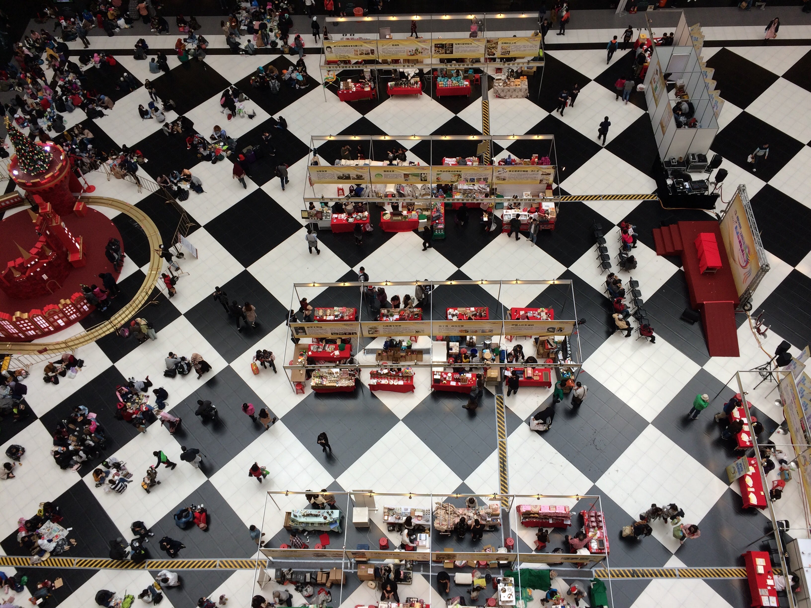
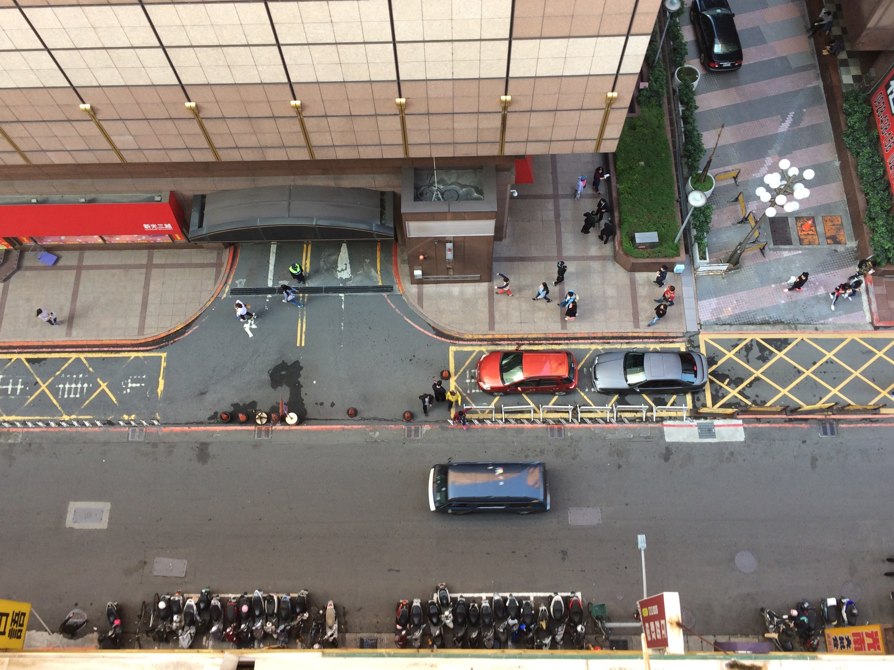
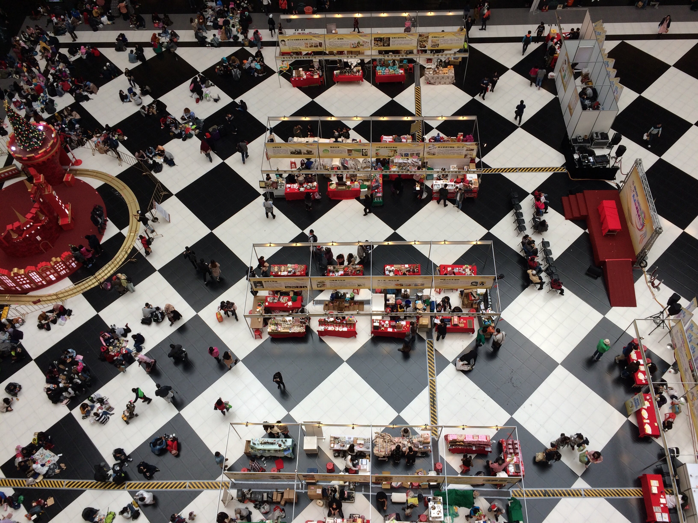
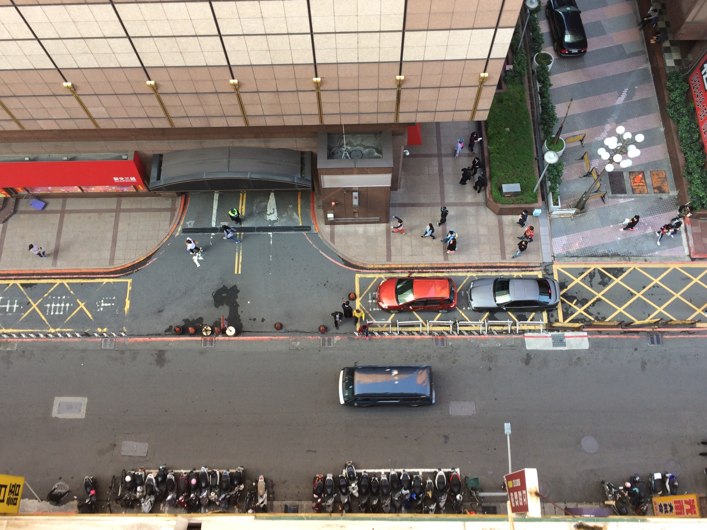

每天有多少人經過這裡
定睛目的地，穿梭人車，難道車站只能擁擠嗎？
從台北車站大樓向下俯視大廳，原來是這種感覺。平時都是黑白格地磁，加上成群結隊的旅人，很有古典的韻味，沒想到有一天看到在辦活動，也許是聖誕市集吧，紅色的攤位讓原本黑白的車站變得活潑有生命力。
PC by Annie Cheng
台北車站周邊的大樓，看到許多規範用的線條。

定睛目的地，穿梭人車，難道車站只能擁擠嗎？
從台北車站大樓向下俯視大廳，原來是這種感覺。平時都是黑白格地磁，加上成群結隊的旅人，很有古典的韻味，沒想到有一天看到在辦活動，也許是聖誕市集吧，紅色的攤位讓原本黑白的車站變得活潑有生命力。
台北車站周邊的大樓，看到許多規範用的線條。
